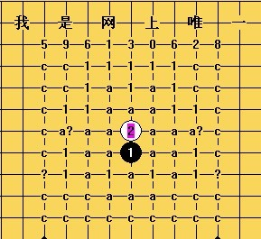
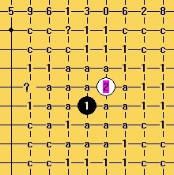
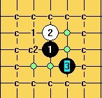
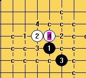
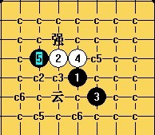
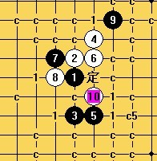

我刚刚发现了一件有趣的事，我发现楼主陈唯一同志的目的了！！！好玩，有趣，呵呵 两年注册纪念日是其中一个原因，还有一个潜在的原因。
我刚刚发现了一件有趣的事，我发现楼主陈唯一同志的目的了！！！好玩，有趣，呵呵 两年注册纪念日是其中一个原因，还有一个潜在的原因。今天看了下注册时间，发现来爱五子棋网快二年了，特此发个贴：
二年时间，学了好多东西，这个网站的确是一个五子棋最好的学习网站。交流特别紧凑，很给力。只叹我已经慢慢脱离了强大的兴趣，完全爱好，很少参与。


棋谱说明
为了减小棋谱内存，同时方便多局共存，本谱精简到连珠终结者可地毯点。
棋谱标记说明：
a:必胜
c：必败
1：唯一可防或者最强防
?：怀疑、疑问、不解
谱：网络棋谱的走法（通常是有不完整点或错点）
我：本人自创，同时认为比较强的点（网络棋谱中没有此点变化）
定：公认的定式点，残局中则是网络棋谱的最后点
骗：骗网络棋谱或者软件
强：很强或者说最强
本棋谱为我是网上唯一制作。版权属于我是网上唯一！如果本人送给他人使用，请勿传播，如有发生，本人将予以追究。
QQ：59613028
Email:2121cn24@21cn.com
谱中开局胜败统计：
二打必胜局：花月（4打）、浦月（4打）、金星、云月、雨月、溪月、峡月、水月、岚月、溪月刀、明星、寒星、恒星
一打必胜局：新月、名月、银月、松月、山月、残月、瑞星
必败局：游星、慧星、瑞星刀、山月刀、水月刀、名月刀、外名月刀、长星刀、外长星刀、疏星刀、外疏星刀、外新月刀等。。。
疏星：一打（G7），二打到七打（I5、I6、I8、J7、J8、K7）黑可战，七打后黑败
斜月：一打（J7），二打三打（G7、I8），四打（I6）可战，四打后黑败
长星：一打（J8）可战，二打（H6）白优，二打后黑败
流星：一打（J7）黑优，二打（J8）可战，三打（H7）白近胜，三打后黑败
丘月：一打（J7），二打三打（G7、I8），四打（I6）可战，四打后黑败
二打结论：
瑞星：白四（I6）唯一。二打（I10）可战，二打后黑败
松月：白四（I7、H10）唯一
新月：白四（G7）唯一
山月：白四（G7、I8）可战
名月：白四（H7）唯一
银月：白四（H7）唯一
残月：白四（G8）唯一
残月刀：白四（I7、G7）唯一
金星刀：白四（G8）~黑五败
一打结论：
残月刀：白四（I7）唯一
金星刀：白四（I6）唯一
［此帖子已被 陈唯一 在 2011-6-26 2:13:54 编辑过］
［此帖子已被 陈唯一 在 2011-6-26 2:23:22 编辑过］
［ 有志青年 于 2011-6-26 8:43:50 时奖励此帖[金币加 100 威望加1］
［ 踵酃 于 2011-6-26 9:20:13 时花20金币送鲜花一朵］
［ 死劲哭 于 2011-6-26 10:08:14 时花20金币送鲜花一朵］
［ 与郎共五 于 2011-6-26 11:04:37 时花20金币送鲜花一朵］
［ 消逝的雨 于 2011-6-26 21:21:38 时花20金币送鲜花一朵］
［ 消逝的雨 于 2011-6-26 21:23:35 时花20金币送鲜花一朵］




我刚刚发现了一件有趣的事，我发现楼主陈唯一同志的目的了！！！好玩，有趣，呵呵 两年注册纪念日是其中一个原因，还有一个潜在的原因。
从楼主发此帖的一个小时前所回复的华夏收费班帖子内容，再加上之前对高飞的“三段以下无论权”的强烈辩护回帖。
我推断楼主看到高飞的收费班的帖子后，为了打击高手的收费教学，所以特地在人家收费班帖子发出后，公布你的学习笔记本，打算把你所学到的，所研究的，所知道对外公布，你的推销对象正式新手也就是人家收费班准备招揽的消费者。
 你的最终目的被我看出来了。。。。。嘿嘿。。。
你的最终目的被我看出来了。。。。。嘿嘿。。。
无私，真爱。
这么好的贴咋藏这儿了？这里一般初学者很少来的，广告打错地方了，呵呵
［ 死劲哭 于 2011-6-26 15:38:49 时花20金币送鲜花一朵］
引用：预言：小丸大师已经拥有比这个更完美的谱，而且很有可能被我的真诚所感动，而......
原文由 小丸.net 发表于 2011-6-26 14:23:29 :
预言：楼主总有一天会被大家说服，把谱共享出来的。 2011-6-26 14:23 :30［ 死劲哭 于 2011-6-26 15:38:49 时花20金币送鲜花一朵］


唯一哥，你QQ写错了，缺了一位
真是的，好久不传棋谱，这个都忘了。
 这样应该是不行的，ShowPost.asp?ThreadID=10688
这样应该是不行的，ShowPost.asp?ThreadID=10688
5L也已经发过山月的专属变化
云月那必胜起码发了三回了
 桌面.rar
桌面.rar